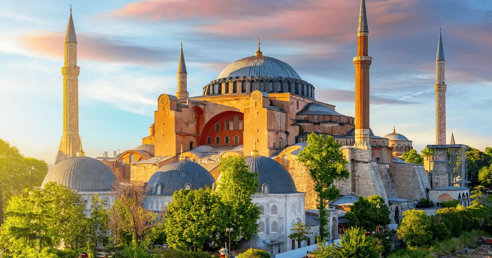

Is Hagia Sophia free to visit? This question causes a lot of confusion because the answer depends on which area you want to access and which regulations are current at the time of your visit.
Quick answer
Prayer areas and tourist visitor areas can operate differently. Visitor sections generally require tickets, while access rules for worship areas may vary.
Prayer Areas
Because Hagia Sophia is an active mosque, prayer areas operate differently from visitor sections. Access rules can vary, especially around prayer times and religious events.
Tourist Areas
Visitor sections generally require tickets. These are the areas most tourists want to access for sightseeing, history, architecture and photography.
Why The Confusion Exists
Many online articles contain outdated information. Hagia Sophia's visitor rules have changed multiple times in recent years, so older blog posts may no longer be accurate.
Should You Book Online?
Booking online gives you instant confirmation, mobile ticket access and a clearer plan before you reach Sultanahmet. It is especially useful during summer, weekends and cruise ship days.
Local Tip
Book Your Hagia Sophia Ticket
For a smoother visit, book online before you arrive. You get mobile ticket access, instant confirmation and a clearer plan for your Sultanahmet day.

Hagia Sophia Ticket & Visitor Guide
Mobile ticket · instant confirmation · from €34.90